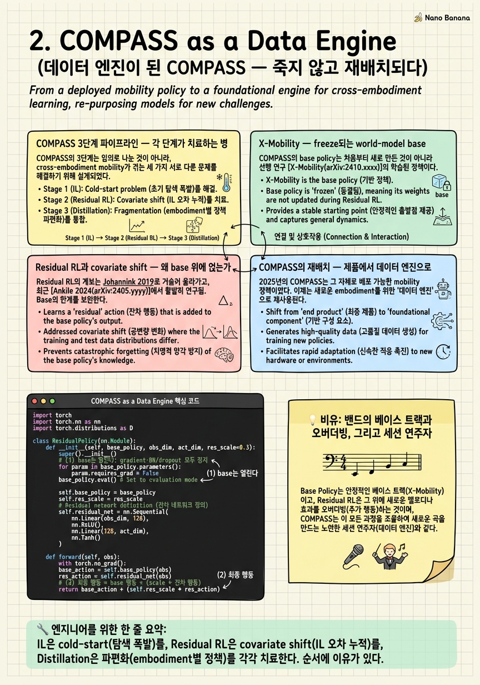

COMPASS as a Data Engine

🎯 학습 목표
- COMPASS의 IL to Residual RL to Distillation 3단계를 각각의 역할과 함께 설명할 수 있다
- X-Mobility의 world-model IL이 왜 base policy로 freeze되는지 안다
- residual RL이 covariate shift를 어떻게 완화하는지 수식으로 설명할 수 있다
- COMPASS가 독립 제품에서 GR00T 데이터 엔진으로 재배치된 근거(원문)를 안다
- specialist to generalist distillation 문법을 GR00T 맥락에서 재해석할 수 있다
1챕터에서 우리는 이 코스의 중심 좌표 — '데이터 스케일링 vs 구조적 분리' — 를 세웠고, 2026년 GR00T N1.6이 navigation과 manipulation을 하나의 reasoning VLA로 통합하되 그 내부는 여전히 하이브리드(합성데이터 공장 × 계층 아키텍처 × specialist distillation)라는 논지를 예고했다. 이번 챕터는 그 하이브리드의 첫 조각, 즉 navigation 쪽 공급망을 해부한다. 그리고 그 공급망의 심장에 바로 선행 코스의 주인공 COMPASS(arXiv:2502.16372)가 있다.
COMPASS는 2025년 2월 NVIDIA가 내놓은 'the next version of X-Mobility, an end-to-end generalizable mobility model'이다. 한 문장으로 요약하면 IL로 base를 깔고(freeze) → Residual RL로 각 embodiment를 보정하고 → Policy Distillation으로 하나의 generalist로 합치는 3단계 파이프라인이다. 이 세 단계는 각각 다른 병을 치료한다. IL은 world-model prior를 심고, Residual RL은 IL이 필연적으로 남기는 covariate shift를 \(a = a_{\text{base}} + a_{\text{res}}\)로 보정하며, Distillation은 여러 embodiment specialist를 KL로 녹여 cross-embodiment generalist를 만든다. 이 챕터의 전반부는 이 3단계를 각 단계가 '무슨 병을 치료하는가'의 관점에서 다시 못 박는다.
하지만 이 챕터의 진짜 목표는 그다음에 있다. 2025년의 COMPASS는 Nova Carter·H1·G1·Spot을 모두 모는 독립 mobility 제품이었다. 그런데 2026년 GR00T 서사에서 COMPASS는 제품의 자리를 내려놓고 다른 역할로 재배치된다 — NVIDIA의 표현을 빌리면 "GR00T N1.6 is finetuned for point-to-point navigation using large-scale synthetic datasets generated by COMPASS in Isaac Lab." 즉 COMPASS는 이제 GR00T의 navigation을 finetune하기 위한 데이터를 찍어내는 엔진이다. 정책이 제품에서 데이터 공장으로 내려앉는 이 이동을, 우리는 3단계 파이프라인의 논리적 귀결로 읽어낼 것이다.
핵심 내용
COMPASS 3단계 파이프라인 — 각 단계가 치료하는 병
COMPASS의 3단계는 임의로 나눈 것이 아니라, cross-embodiment mobility가 겪는 세 가지 서로 다른 실패에 각각 대응한다. 단계를 '무엇을 하는가'가 아니라 '무슨 병을 치료하는가'로 읽어야 파이프라인이 왜 이 순서인지 이해된다.
1단계 — Imitation Learning(prior 심기). 먼저 X-Mobility world model을 대규모 시연 데이터로 IL 학습해, 환경 dynamics를 압축한 latent state와 그 위의 base velocity policy \(\pi_{\text{base}}\)를 얻는다. 이 단계가 치료하는 병은 cold-start다. RL을 맨땅에서 돌리면 navigation처럼 reward가 희소하고 지평이 긴 문제에서 탐색이 폭발해 수렴하지 못한다. IL은 '대충 맞는 행동의 분포'라는 강한 prior를 깔아 이후 RL의 탐색 공간을 좁힌다.
2단계 — Residual RL(covariate shift 보정). IL로 학습한 \(\pi_{\text{base}}\)를 얼려두고(freeze), 그 위에 작은 residual policy \(\pi_{\text{res}}\)만 RL로 학습한다. 실제 실행 행동은 \(a = a_{\text{base}} + a_{\text{res}}\)다. 이 단계가 치료하는 병은 covariate shift — IL 정책이 자기 오차로 학습 분포 밖 상태에 진입하면서 점점 어긋나는 현상 — 이다. residual은 base가 놓인 궤적을 각 embodiment의 실제 dynamics에 맞게 국소적으로 밀어준다. 특히 base를 freeze하기 때문에 world-model이 준 prior를 훼손하지 않으면서 보정만 얹는다.
3단계 — Policy Distillation(파편화 봉합). 2단계가 끝나면 embodiment마다 하나씩 specialist가 생긴다(Nova Carter용, H1/G1용, Spot용). 3단계는 이 여러 specialist를 one-hot embodiment embedding으로 조건화된 하나의 student policy로 KL-distill한다. 목적함수는 대략 \(\mathcal{L} = \sum_{e} \mathbb{E}\big[ D_{\text{KL}}(\pi_{e}^{\text{teacher}} \,\|\, \pi^{\text{student}}(\cdot\mid s, e)) \big]\)로, embodiment 인덱스 \(e\)를 입력으로 받아 teacher별 행동 분포를 모사한다. 이 단계가 치료하는 병은 파편화(fragmentation)다. specialist를 따로 두면 배포·유지가 N배로 늘고 새 embodiment로의 전이가 안 되지만, 하나의 conditioned generalist는 embodiment embedding만 갈아끼워 재사용된다.
세 단계를 한 줄로 잇는 표어: prior를 심고(IL) → 어긋남을 보정하고(Residual RL) → 파편을 봉합한다(Distillation). 논문이 보고하는 성과 — RL-from-scratch 대비 success rate 5~40배, 그리고 RL-from-scratch는 1000 episode에도 수렴 실패 — 는 이 세 병을 순서대로 치료했기에 나온 결과이지, 모델을 키워서 얻은 것이 아니다. 이것이 '구조가 데이터를 이긴다'는 선행 코스 결론의 압축이다.
| 단계 | 이름 | 치료하는 병 | 핵심 메커니즘 | 학습 대상 |
|---|---|---|---|---|
| 1 | Imitation Learning | cold-start (탐색 폭발) | X-Mobility world-model IL | base policy 전체 |
| 2 | Residual RL | covariate shift (IL 오차 누적) | a = a_base + a_res, base freeze | residual head만 |
| 3 | Policy Distillation | 파편화 (embodiment별 정책) | one-hot embedding KL distill | conditioned student |
X-Mobility — freeze되는 world-model base
COMPASS의 base policy는 처음부터 새로 만든 것이 아니라 선행 연구 X-Mobility(arXiv:2410.17491)를 그대로 얼려서 가져온 것이다. X-Mobility의 핵심 설계는 auto-regressive world modeling으로 latent state space를 학습하고, world modeling과 action policy를 decouple하는 것이다. 이 두 성질(world model, decoupling)이 왜 COMPASS의 freeze 전략과 맞물리는지가 이 절의 요점이다.
왜 world model인가. navigation은 부분 관측(partial observability) 문제다. 한 프레임 RGB는 벽 뒤의 통로도, 방금 지나친 장애물도, 자신의 진행 관성도 담지 못한다. X-Mobility는 과거를 압축한 latent state \(s_t \approx f(s_{t-1}, a_{t-1})\)를 auto-regressive하게 유지해, '지금 안 보이지만 존재하는' 환경 구조를 기억한다. 정책은 한 장의 사진이 아니라 '흘러가는 세계의 요약'을 입력으로 받는다. 이 latent가 곧 cross-embodiment로 공유될 공통 표현(shared representation)의 후보가 된다 — 지형·장애물·자유공간의 구조는 바퀴로 굴러가든 두 발로 걷든 동일하기 때문이다.
왜 decouple인가. X-Mobility는 '세계가 어떻게 변하는가(world modeling)'와 '그래서 무엇을 할까(action policy)'를 분리해 학습한다. 이 분리 덕분에 COMPASS는 world modeling 부분을 embodiment-agnostic한 자산으로 얼려두고, action 쪽만 residual/distillation으로 갈아끼울 수 있다. 만약 둘이 한 덩어리로 엉켜 있었다면, 한 embodiment의 RL 신호가 world model까지 흔들어 다른 embodiment의 표현을 오염시키고, 3단계 distillation이 합칠 공통 기반 자체가 매번 달라졌을 것이다.
그래서 freeze한다. COMPASS에서 X-Mobility base는 학습 내내 gradient를 받지 않는다. freeze는 단순 연산 절약이 아니라 두 기능을 동시에 노린 설계 결정이다. (1) RL 수렴을 위한 action prior — base가 이미 '대충 맞는 행동'을 내주므로 residual RL의 탐색이 국소화되어 수렴한다. (2) distillation을 위한 공통 표현 보존 — 모든 embodiment specialist가 같은 얼린 latent 위에 서 있어야 나중에 하나로 녹일 수 있다. 이 두 기능이 곧 선행 코스가 강조한 'RL-from-scratch는 실패한다(1000 episode 미수렴)'의 근본 원인이다. latent만 있고 얼린 prior가 없으면 world-model의 이점이 탐색 폭발에 삼켜진다.
Residual RL과 covariate shift — 왜 base 위에 얹는가
Residual RL의 계보는 Johannink 2019로 거슬러 올라가고, 최근 Ankile 2024(arXiv:2407.16677)로 manipulation·contact-rich 과제에서 부활했다. 아이디어는 한 줄이다: 잘 작동하지만 불완전한 base 정책이 있을 때, 그것을 버리고 새로 배우는 대신 차이(residual)만 학습한다.
\[a_t = a_t^{\text{base}} + a_t^{\text{res}}, \qquad a_t^{\text{base}} = \pi_{\text{base}}(s_t)\ \text{(frozen)},\quad a_t^{\text{res}} = \pi_{\theta}^{\text{res}}(s_t)\]
학습은 오직 residual 파라미터 \(\theta\)에 대해서만 이루어진다. base는 상수처럼 취급되므로 정책 gradient는 \(\nabla_{\theta} J = \mathbb{E}\big[ \nabla_{\theta}\log \pi_{\theta}^{\text{res}}(a_t^{\text{res}}\mid s_t)\, A_t \big]\) 형태로 residual head에만 흐른다. residual을 0 근처에서 초기화하면 학습 초기의 정책은 곧 \(\pi_{\text{base}}\) 자체이므로, RL은 '검증된 정책'에서 출발해 안전하게 개선을 쌓는다. 이것이 cold-start 없이 sample-efficient한 이유다.
그런데 왜 굳이 residual이 covariate shift를 치료하는가. covariate shift는 IL의 고질병이다. IL 정책 \(\pi_{\text{base}}\)는 전문가 시연 분포 \(d_{\text{expert}}(s)\) 위에서만 학습됐는데, 배포 시에는 자기 자신이 만든 분포 \(d_{\pi}(s)\) 위를 굴러간다. 작은 오차가 학습에서 본 적 없는 상태로 정책을 밀어내고, 그곳에서 정책은 더 큰 오차를 내며, 오차가 시간에 따라 누적된다. 고전적 결과(DAgger 계열 분석)에 따르면 이 누적은 최악의 경우 지평 \(T\)에 대해 \(O(T^2)\)로 커진다 — 한 스텝의 오차가 이후 모든 스텝의 상태 분포를 오염시키기 때문이다.
residual RL은 이 병을 정면으로 겨냥한다. RL은 IL과 달리 정책 자신이 방문하는 on-policy 분포 \(d_{\pi}\) 위에서 reward로 학습한다. 즉 covariate shift가 실제로 발생하는 바로 그 상태들 위에서 보정을 배운다. base가 놓친 '학습 분포 밖' 영역에서 \(a^{\text{res}}\)가 궤적을 되돌려, IL이라면 \(O(T^2)\)로 발산했을 오차를 선형에 가깝게 억제한다. 요컨대 IL은 '평균적으로 맞는' 행동을, residual RL은 '내가 실제로 가는 곳에서 맞는' 행동을 담당한다. 각 embodiment의 dynamics(바퀴 vs 다리 vs 사족)가 base가 가정한 것과 다를 때, 그 차이가 정확히 \(a^{\text{res}}\)가 흡수해야 할 몫이다.
마지막으로 이 설계는 3단계 distillation과 논리적으로 이어진다. residual만 embodiment별로 다르고 base(world model)는 공유되므로, distillation이 합쳐야 할 것은 '완전히 다른 N개 정책'이 아니라 '같은 base 위의 N개 보정'이다. 공통 base가 이미 정렬을 만들어 두었기에 KL distill이 잘 수렴한다.
COMPASS의 재배치 — 제품에서 데이터 엔진으로
2025년의 COMPASS는 그 자체로 배포 가능한 mobility 정책이었다. Nova Carter(wheeled)·Unitree H1/G1(humanoid)·Spot(quadruped)을 하나의 generalist로 모는, NVIDIA Open Models License(상업 사용 가능) 하의 독립 제품. 그런데 2026년 GR00T 서사에서 COMPASS의 위치가 바뀐다. NVIDIA는 이렇게 쓴다:
"GR00T N1.6 is finetuned for point-to-point navigation using large-scale synthetic datasets generated by COMPASS in Isaac Lab."
(GR00T N1.6은 Isaac Lab에서 COMPASS가 생성한 대규모 합성 데이터셋을 사용해 point-to-point navigation용으로 finetune된다.)
이 한 문장에 재배치의 전모가 담겨 있다. COMPASS는 더 이상 로봇에 올라가 실행되는 최종 정책이 아니다. 대신 Isaac Lab 시뮬레이션 안에서 무한히 굴러다니며 '이 상황에서는 이렇게 이동한다'는 navigation 궤적 데이터를 대량 생산하는 엔진이 되고, 그 데이터로 GR00T N1.6이라는 더 큰 VLA가 point-to-point navigation 능력을 흡수한다. 정책이 제품에서 데이터 공장으로 한 층 내려앉은 것이다.
왜 이 재배치가 자연스러운가. 세 가지 성질이 COMPASS를 이상적인 데이터 엔진으로 만든다. (1) cross-embodiment generalist — 이미 여러 로봇을 모니, 한 엔진이 다양한 embodiment의 navigation 데이터를 찍어낼 수 있다. (2) 시뮬레이션 네이티브 — COMPASS는 Isaac Lab에서 학습됐고 거기서 그대로 굴리면 domain randomization과 대규모 병렬로 데이터를 값싸게 스케일할 수 있다. (3) 검증된 policy — 3단계로 다듬어진 정책이 만드는 궤적은 무작위 탐색보다 훨씬 높은 품질의 supervision이다. 요컨대 COMPASS의 산출물이 '실행되는 행동'에서 '학습시키는 라벨'로 재정의된 것이다.
이것이 코스 논지에 갖는 의미. GR00T N1.6은 겉보기엔 navigation을 '데이터로 흡수한' 통합 VLA처럼 보인다. 하지만 그 데이터의 출처를 파고들면, 흡수를 가능케 한 것은 구조적으로 설계된 COMPASS 파이프라인(freeze된 world model + residual + distillation)이 찍어낸 합성 데이터다. 즉 GR00T의 '데이터 스케일링'은 순수한 데이터 스케일링이 아니라 구조가 생산한 데이터의 스케일링이다. 데이터 스케일링과 구조적 분리는 대립이 아니라, 후자가 전자의 공급원이 되는 관계로 접합된다 — 이 챕터가 코스 전체 논지에 놓는 첫 번째 쐐기다.
한 가지 경계도 분명히 하자. COMPASS가 공급하는 것은 point-to-point navigation, 즉 '어디로 갈까'의 고수준 이동 결정에 가깝다. metric localization(정확히 어디에 있는가)까지 이 데이터 엔진이 삼킨 것은 아니며, 그 경계선은 8챕터에서 geometric SLAM 스택과 함께 다시 다룬다. 지금은 'specialist가 죽지 않고 데이터 엔진으로 재배치된다'는 문법만 손에 쥐면 된다.
💡 비유로 이해하기
녹음 스튜디오를 상상하자. 먼저 실력 있는 세션 연주자가 곡의 베이스 트랙을 깔끔하게 깐다 — 곡 전체의 골격, 코드 진행, 리듬이 여기 담긴다. 이것이 IL로 학습한 얼린 base policy \(\pi_{\text{base}}\)다. 한 번 잘 깔아두면 이후로는 건드리지 않는다(freeze). 골격을 매번 다시 녹음하면 그 위에 얹을 모든 것이 흔들리기 때문이다.
이제 이 베이스 트랙을 여러 무대에 맞게 손봐야 한다. 재즈 클럽, 야외 페스티벌, 좁은 라이브 하우스 — 각 공간의 음향(각 embodiment의 dynamics)이 다르다. 이때 베이스를 다시 녹음하지 않는다. 대신 그 위에 얇은 오버더빙을 얹어 각 무대에서 어긋나는 부분만 보정한다. 실제로 나가는 소리는 \(a = a_{\text{base}} + a_{\text{res}}\) — 베이스 트랙 더하기 오버더빙이다. 오버더빙은 처음엔 거의 0(무음)에서 시작해, 실제 그 무대에서 소리가 붕 뜨는 지점만 골라 눌러준다. 이것이 residual RL이 on-policy 분포 위에서 covariate shift를 잡는 감각이다 — 스튜디오(전문가 분포)가 아니라 실제 공연장(정책이 방문하는 분포)에서 튜닝한다.
무대마다 오버더빙이 하나씩 생겼다(specialist들). 이제 프로듀서는 이 버전들을 하나의 마스터 세션 연주자에게 몰아준다. 그는 '무대 이름(one-hot embodiment embedding)'만 들으면 그에 맞는 연주를 재현하도록 훈련된다 — 이것이 distillation이다. 한 명이 모든 무대를 커버하니 팀을 N배로 꾸릴 필요가 없다.
마지막 반전이 이 챕터의 핵심이다. 이 마스터 연주자(COMPASS)는 처음엔 직접 무대에 서는 공연자(제품)였다. 그런데 이제 그를 무대에서 내려, 스튜디오에 앉혀 다른 신인 아티스트(GR00T)를 가르칠 교재 트랙을 무한히 찍어내게 한다. 그가 만든 연주는 이제 관객이 듣는 공연이 아니라, 신인이 따라 배우는 레퍼런스 데이터다. 연주자가 죽지 않고, 공연자에서 교재 제작자로 재배치된 것 — 그것이 'COMPASS가 제품에서 데이터 엔진이 된다'는 말의 감각이다.
💻 코드 예시
Residual RL의 심장인 \(a = a_{\text{base}} + a_{\text{res}}\)를 PyTorch wrapper로 구현해보자. 핵심 세 가지: (1) base policy는 eval()+requires_grad_(False)로 완전히 얼린다, (2) residual head는 마지막 층 weight를 0으로 초기화해 학습 초기 행동이 정확히 \(a_{\text{base}}\)가 되게 한다, (3) forward가 돌려주는 것은 실행할 action과 gradient가 흐르는 residual 분포다. 이 한 클래스가 COMPASS 2단계의 최소 골격이다.
import torch
import torch.nn as nn
import torch.distributions as D
class ResidualPolicy(nn.Module):
def __init__(self, base_policy, obs_dim, act_dim, res_scale=0.3):
super().__init__()
# (1) base는 얼린다: gradient·BN/dropout 모두 정지
self.base = base_policy.eval().requires_grad_(False)
self.res_scale = res_scale # residual이 base를 지배하지 못하게 제한
# (2) residual head: 마지막 층 weight=0 -> 초기 a_res=0 -> a=a_base
self.res_net = nn.Sequential(
nn.Linear(obs_dim, 256), nn.ELU(),
nn.Linear(256, act_dim),
)
nn.init.zeros_(self.res_net[-1].weight)
nn.init.zeros_(self.res_net[-1].bias)
self.log_std = nn.Parameter(torch.full((act_dim,), -1.0))
def forward(self, obs):
with torch.no_grad(): # base 경로엔 gradient 없음
a_base = self.base(obs)
mean_res = self.res_scale * torch.tanh(self.res_net(obs))
dist = D.Independent( # residual만 stochastic
D.Normal(mean_res, self.log_std.exp()), 1)
a_res = dist.rsample()
action = a_base + a_res # a = a_base + a_res
return action, dist, a_res
def update(self, obs, advantage, optimizer):
# policy gradient는 residual 파라미터에만 흐른다
_, dist, a_res = self.forward(obs)
logp = dist.log_prob(a_res.detach())
loss = -(logp * advantage.detach()).mean()
optimizer.zero_grad(); loss.backward(); optimizer.step()
return loss.item()__init__의 첫 결정이 전부를 규정한다. base_policy.eval().requires_grad_(False)는 X-Mobility world-model base를 상수로 못 박는다 — 이후 어떤 gradient도 base에 닿지 않으므로 공통 표현과 action prior가 보존된다. forward에서 base를 torch.no_grad()로 감싼 것도 같은 이유의 이중 안전장치다.
residual head의 zero-init(\(\text{weight}=0,\ \text{bias}=0\))이 실전에서 결정적이다. 마지막 층이 0이면 학습 시작 시 \(a_{\text{res}}=0\)이라 \(a = a_{\text{base}} + 0 = a_{\text{base}}\) — 즉 RL이 '검증된 IL 정책'에서 정확히 출발한다. cold-start 없이 안전하게 개선을 쌓는 residual RL의 성질이 이 한 줄에서 나온다. res_scale과 tanh는 residual이 base를 뒤엎지 못하게 크기를 \([-0.3, 0.3]\)으로 묶는 가드레일이다.
forward의 action = a_base + a_res가 이 챕터의 수식 \(a = a_{\text{base}} + a_{\text{res}}\) 그 자체다. 그리고 update에서 loss는 \(-\mathbb{E}[\log \pi^{\text{res}}_\theta(a_{\text{res}}\mid s)\,A]\) 형태이고, base가 이미 detach되어 있으므로 loss.backward()의 gradient는 오직 res_net과 log_std로만 흐른다. base 파라미터는 optimizer에 아예 등록조차 되지 않는다. 이것이 '\(a_{\text{base}}\)는 freeze, residual만 학습'을 코드로 못 박은 지점이다.
이 wrapper 하나를 embodiment마다 인스턴스로 찍으면(같은 base, 다른 res_net) 2단계가 끝나고 N개의 specialist가 생긴다. 3단계 distillation은 이 N개를 one-hot embedding으로 조건화된 하나의 student로 KL-distill하는 것으로, 여기서는 base가 공유되므로 합칠 대상이 '같은 베이스 위의 residual들'이라는 점이 수렴을 돕는다.
🏭 현업에서의 평가
✅ 시니어가 보는 것
- IL·Residual RL·Distillation 각 단계를 '무슨 병을 치료하는가'(cold-start / covariate shift / 파편화)로 매핑해 설명하는가
- residual RL이 covariate shift를 '완화'하는 이유를 on-policy 분포(d_pi)에서 학습한다는 점으로 정확히 짚는가
- base를 freeze하는 이유를 'RL 수렴용 action prior'와 'distillation용 공통 표현 보존' 두 축으로 나눠 설명하는가
- X-Mobility의 world-model/action decouple이 왜 freeze·재사용을 가능케 하는지 연결하는가
- COMPASS가 최종 정책이 아니라 GR00T의 navigation finetune용 데이터 엔진으로 재배치됐다는 시스템적 이동을 이해하는가
- '데이터 스케일링 vs 구조'가 대립이 아니라 구조가 데이터의 공급원이 되는 관계임을 논증하는가
⚠️ 레드 플래그
- residual RL을 그냥 'RL로 fine-tune하는 것'으로 이해하고 base freeze / a=a_base+a_res의 의미를 놓침
- covariate shift를 IL의 문제로 인지하지 못하거나, residual이 이를 왜 완화하는지(on-policy 학습) 설명 못 함
- freeze를 단순 연산 절약으로 오해하고 action prior·공통 표현 보존과 연결하지 못함
- distillation의 one-hot embodiment embedding 조건화를 모르고 '그냥 앙상블'이라 오인
- COMPASS를 여전히 최종 배포 정책으로만 이해하고 데이터 엔진 재배치를 모름
- RL-from-scratch가 1000 episode에도 실패한다는 반례를 모른 채 'latent만 있으면 RL로 된다'고 단정
🎤 예상 인터뷰 질문
- COMPASS의 3단계에서 각 단계가 치료하는 실패 모드를 하나씩 대응시키고, 왜 이 순서여야 하는지(순서를 바꾸면 무엇이 깨지는지) 논하라.
- IL 정책은 covariate shift로 O(T^2) 오차 누적을 겪는다. residual RL이 이를 왜 완화하는지 학습 분포(d_expert vs d_pi) 관점에서 설명하고, 그럼에도 남는 한계를 말하라.
- base policy를 freeze하지 않고 residual과 함께 fine-tune하면 무엇이 깨지는가? 특히 이후 distillation 단계와 연결해 논하라.
- 'GR00T N1.6 is finetuned for point-to-point navigation using synthetic datasets generated by COMPASS in Isaac Lab' — 이 문장이 '데이터 스케일링 vs 구조적 분리' 논쟁에 대해 무엇을 말하는지 해석하라.
✨ 핵심 요약
3단계 = 세 병의 치료
IL은 cold-start(탐색 폭발)를, Residual RL은 covariate shift(IL 오차 누적)를, Distillation은 파편화(embodiment별 정책)를 각각 치료한다. 순서에 이유가 있다.
a = a_base + a_res
base policy를 얼려두고 residual head만 RL로 학습해 실행 행동을 base 더하기 보정으로 낸다. residual을 0에서 초기화하면 검증된 IL 정책에서 안전하게 출발한다.
residual은 on-policy에서 배운다
covariate shift는 정책이 자기 분포(d_pi) 위를 굴러 O(T²)로 오차가 누적되는 IL의 병이다. residual RL은 바로 그 분포 위에서 reward로 보정을 배워 붕괴를 억제한다.
freeze는 두 기능을 한다
얼린 X-Mobility base는 RL 수렴용 action prior를 주는 동시에, 모든 embodiment가 공유할 공통 표현을 보존해 이후 distillation을 가능케 한다. 연산 절약이 아니다.
world/action decouple이 재사용을 연다
X-Mobility가 world modeling과 action policy를 분리 학습했기에, COMPASS는 world 부분을 embodiment-agnostic 자산으로 얼리고 action만 residual/distill로 갈아끼운다.
distillation은 공통 base 위의 봉합
one-hot embodiment embedding으로 조건화해 여러 specialist를 하나의 student로 KL-distill한다. base가 공유되므로 합칠 대상이 '같은 베이스 위의 residual들'이라 수렴이 쉽다.
COMPASS는 제품에서 데이터 엔진으로 재배치
GR00T N1.6은 Isaac Lab에서 COMPASS가 생성한 대규모 합성 데이터로 point-to-point navigation을 finetune한다. 정책이 실행 제품에서 라벨 공장으로 내려앉았다.
구조가 생산한 데이터의 스케일링
GR00T의 navigation 흡수는 순수 데이터 스케일링이 아니라 구조적 COMPASS 파이프라인이 찍어낸 데이터의 스케일링이다. 데이터와 구조는 대립이 아니라 공급 관계다.